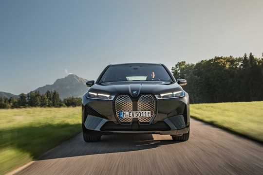
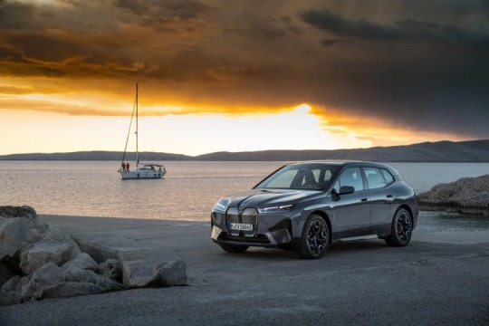

| 80.000e | 630km | Електрични |
| Цена | Домет | Мотор и врста горива |
Рођен из визије. Створен за електричну мобилност. Захваљујући ефикасној BMW eDrive технологији и потпуно електричном погону на сва четири точка, BMW iX постиже изузетан домет и пружа импресивно убрзање од нуле. Интелигентни BMW оперативни систем 8 се користи интуитивно.
|  |
BMW iX ИМА ДОМЕТ ОД 630 KM.Са дометом од 630 км * BMW iX xDrive50 (BMW iX xDrive40: 425 км) идеалан је за градску вожњу и за дужа путовања. Захваљујући високо ефикасном конструкције, има веома ниску потрошњу енергије, од максимално 23 кВ/х и изузетан аеродинамика са ниским коефицијентом отпора ваздуха од само 0,25 – што је вредност без премца у овом сегменту. Ако возите свој БМВ иКс у мом режиму, додатно га повећавате ефикасност овог импресивног и ефикасног модела. |
BMW iX CA 523 KS.Са два снажна електромотора и BMW xDrive електричним погоном на свим Погон на сва четири точка, BMW iX нуди изванредне перформансе: 523 КС * покреће BMW iX xDrive50 од 0 до 100 км/х за 4,6 секунди (BMW iX xDrive40: 326 КС*; 0-100 км/х за 6,1 с). Тренутно доступни обртни момент и континуирано убрзање од почетка рада дозвољавају БМВ иКс модели да прецизно и тренутно реагују на сваки покрет педале гаса и тако обезбеђују невероватно искуство вожње. |
 |
Са вашим BMW iX и БМВ пуњењем, број опција за пуњење батерија код куће, на послу или на путу значајно се повећава. Такође, перформансе пуњења су импресивне и омогућавају вам да напуните батерију до домета од скоро 150 км * за само 10 минута за BMW iX кДриве50 (BMW ix xDrive40: преко 95 км * за 10 минута) или цео домет за мање од 40 минута на јавним станицама за пуњење са ознаком ИОНИТИ Хигх Повер Цхаргинг ..